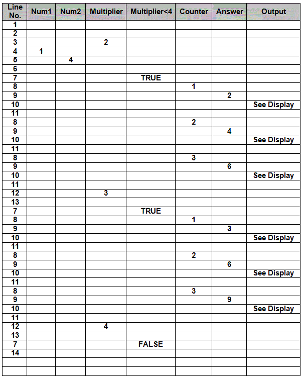
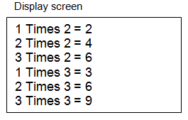

<div id="jsn-maincontent" class="span9 order1 row-fluid">
  <div id="jsn-maincontent_inner">
    <div id="jsn-centercol">
      <div id="jsn-centercol_inner">
        <div id="jsn-mainbody-content" class="jsn-hasmainbody">
          <div id="jsn-mainbody-content-inner1">
            <div id="jsn-mainbody-content-inner2">
              <div id="jsn-mainbody-content-inner3">
                <div id="jsn-mainbody-content-inner4" class="row-fluid">
                  <div id="jsn-mainbody-content-inner" class="span12 order1">
                    <div id="jsn-mainbody">
                      <div id="system-message-container"></div>

                      <div
                        class="item-page"
                        itemscope
                        itemtype="https://schema.org/Article"
                      >
                        <meta itemprop="inLanguage" content="en-GB" />

                        <div itemprop="articleBody">
                          <p></p>
                          <h1
                            class="ContentHeading"
                            style="text-align: center"
                            align="center"
                          >
                            Dry runs
                          </h1>
                          <p>
                            <strong class="NormalContentHeading"
                              >Introduction</strong
                            ><br />
                            A section of a program that a programmer suspects of
                            having an error might be 'dry run'. A dry run might
                            also be used to check an algorithm during program
                            design.
                          </p>

                          <p>
                            <strong
                              ><span class="NormalContentHeading"
                                >Dry run
                              </span></strong
                            ><br />
                            Dry running a program involves the programmer
                            working through a program on paper, usually using a
                            table called a ‘trace table’. The programmer adds
                            columns for any variables or expressions that are
                            important. When this has been done, the programmer
                            works through the program, line by line, filling
                            into the trace table the values of variables and
                            expressions as they change. By doing this, the
                            programmer can spot the exact position when things
                            start going wrong with the program - when variables
                            suddenly contain unexpected values or expressions
                            don't hold the expected state.
                          </p>
                          <p>
                            To Dry run a program, you will need the code you
                            want to check, a trace table and sometimes a box,
                            which we can use as a display screen. Anything that
                            is output or written or printed, we will write it in
                            the box instead.
                          </p>
                          <p>
                            <strong
                              ><span class="NormalContentHeading"
                                >A worked example</span
                              ></strong
                            ><br />
                            Here is an example of a procedure. We originally
                            came across this algorithm in the nesting section of
                            this website (3.2.2e). It can be used (and modified)
                            to produce times tables for children.
                          </p>
                          <p style="margin-left: 30px">
                            <strong
                              ><span class="NormalContentHeading"
                                >1.&nbsp;&nbsp;&nbsp; Declare Num1, Num2,
                                Multiplier, Answer, Counter As Integer<br />
                                2. <br />
                                3. &nbsp;&nbsp; Multipler = 2<br />
                                4.&nbsp;&nbsp;&nbsp; Num1 = 1<br />
                                5.&nbsp;&nbsp;&nbsp; Num2 = 3 <br />
                                6.<br />
                                7.&nbsp;&nbsp;&nbsp; Do While Multiplier &lt;
                                4<br />
                                8.&nbsp; &nbsp;&nbsp;&nbsp;&nbsp;&nbsp;&nbsp;
                                For Counter = Num1 to Num2 <br />
                                9.&nbsp;&nbsp;&nbsp;&nbsp;&nbsp;&nbsp;&nbsp;&nbsp;&nbsp;&nbsp;&nbsp;&nbsp;
                                Answer = Counter * Multiplier<br />
                                10.&nbsp;&nbsp;&nbsp;&nbsp;&nbsp;&nbsp;&nbsp;&nbsp;&nbsp;&nbsp;
                                Add_to_the_display: Counter &amp; "Times" &amp;
                                Multiplier &amp; " = " &amp; Answer<br />
                                11. &nbsp;&nbsp;&nbsp;&nbsp;&nbsp; Next
                                Counter<br />
                                12&nbsp;&nbsp;&nbsp;&nbsp;&nbsp;&nbsp;&nbsp;
                                Multiplier = Mulitplier + 1<br />
                                13.&nbsp;&nbsp; Loop
                                &nbsp;&nbsp;&nbsp;&nbsp;&nbsp;</span
                              ></strong
                            ><br />
                            <br />
                            <span class="NormalContent"
                              >Let us suppose that we want to check if this
                              algorithm works as intended before we code it up.
                              We need to create a Tace Table. We will put all
                              variables and expressions used by our algorithm in
                              the first row and then we will work through the
                              program line by line. Here is our completed Trace
                              Table, with the display screen underneath
                              it:</span
                            >
                          </p>
                          <p class="ContentHeading" align="center">
                            
                          </p>
                          <p>
                            &nbsp;
                          </p>
                          <p>Let's work through the code ....</p>
                          <ul>
                            <li style="list-style-type: none">
                              <ul style="list-style-type: disc">
                                <li class="NormalContentHeading">
                                  We only put values in boxes when they change.
                                </li>
                                <li>
                                  <span class="NormalContentHeading">
                                    Starting at line 1, no values are put into
                                    variables.</span
                                  ><span class="NormalContentHeading">
                                    Variables are declared on this line.
                                  </span>
                                </li>
                                <li class="NormalContentHeading">
                                  There is no code on line 2.
                                </li>
                                <li class="NormalContentHeading">
                                  In line 3, the Multiplier is set to 2 so we
                                  write 2 in the box.
                                </li>
                                <li class="NormalContentHeading">
                                  In line 4, Num1 is assigned to 1 so we write 1
                                  in the box.
                                </li>
                                <li class="NormalContentHeading">
                                  In line 5, Num2 is assigned to 3, so we write
                                  3 in the Num2 box.
                                </li>
                                <li class="NormalContentHeading">
                                  There's no code on line 6.
                                </li>
                                <li class="NormalContentHeading">
                                  In line 7, the expression 'Multiplier &lt; 4'
                                  Evaluates to TRUE. The Multiplier holds 2 and
                                  2 is less than 4. So we write TRUE in the
                                  correct column and row.
                                </li>
                                <li class="NormalContentHeading">
                                  In line 8, we enter a FOR loop. Counter starts
                                  at 1, so we write 1 in the correct row and
                                  column.
                                </li>
                                <li class="NormalContentHeading">
                                  In line 9, we calculate answer to be Counter *
                                  Multiplier, or 2, so we put 2 in the correct
                                  box.
                                </li>
                                <li class="NormalContentHeading">
                                  In line 10, there is an output, so we write
                                  the output to our Display screen under the
                                  table. <em>1 Times 2 = 2</em> is written onto
                                  the display screen.
                                </li>
                                <li class="NormalContentHeading">
                                  When we get to Line 11, we jump back to line 8
                                  because the FOR loop hasn't exceeded its upper
                                  limit yet.
                                </li>
                                <li class="NormalContentHeading">
                                  On line 8, Counter now becomes 2. We write 2
                                  in the correct row and column.<br />
                                  <br />
                                  And so on .....
                                </li>
                              </ul>
                            </li>
                          </ul>
                          <p></p>
                        </div>
                      </div>
                    </div>
                  </div>
                </div>
              </div>
            </div>
          </div>
        </div>
      </div>
    </div>
  </div>
</div>
